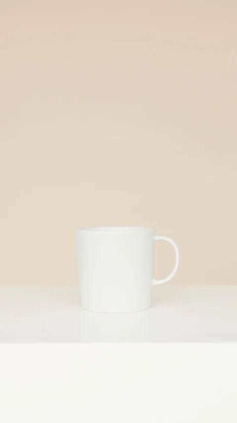

悬疑短片
你在哪
用光影、室内异动和环境声，让一个寻常的空间逐渐失去安全感。
SELECTED FILMS
点击封面，在这里观看短片。
悬疑短片
用光影、室内异动和环境声，让一个寻常的空间逐渐失去安全感。
奇幻动画
会说话的魔法猫与少女短暂相遇，在水彩风的街巷里继续各自的旅程。
生活音乐影像
自然光、街头日常与音乐节拍，让陌生人的生活在一个瞬间交错。
产品创意广告
为面霜、精华水与舒缓喷雾设定角色、场景和分镜，用视觉反差表现卖点。
CHARACTER DESIGN
点开设定稿，可以放大看面部、服装和造型细节。
COMFYUI CASE NOTES
电商换景、角色图生视频与人物 LoRA。点开节点截图，可以查看每个案例的输入、生成设置和输出。
电商视觉
从素色商品图出发，为同一款白瓷杯换上暖色石台与斜窗光。拖动滑块，可以对照素材与生成画面。
主图由工作流生成，展示视频基于成图做轻推镜头。

原始素材工作流输出首帧图生视频
男子端着白杯望向画外。用角色首帧和动作提示生成一段安静的近景反应镜头。
角色训练
整理同一角色的图片和标注，用 SD 1.5 训练权重，输出验证图和损失曲线。
BEHIND THE FRAME
AIGC 视频创作 / AI 内容制作
我关注构图、光线和节奏怎样改变一个故事的感受。制作时，从创意方向和分镜入手，结合本地生成、云端工具与剪辑，完成风格一致的画面。